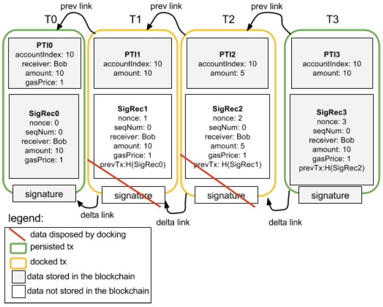
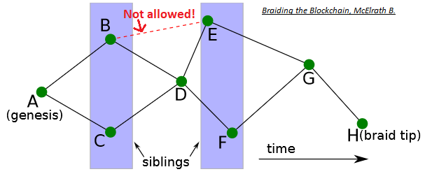

Layer 2 Scaling Survey
- What is Layer 2 Scaling?
- How will this be Applicable to Tari?
- Layer 2 Scaling Current Initiatives
- Observations
- References
- Contributors
What is Layer 2 Scaling?
In the blockchain and cryptocurrency world, transaction processing scaling is a tough problem to solve. This is limited by the average block creation time, the block size limit, and the number of newer blocks needed to confirm a transaction (confirmation time). These factors make "over the counter" type transactions similar to Master Card or Visa nearly impossible if done on the main blockchain (on-chain).

Let's postulate that blockchain and cryptocurrency "take over the world" and are responsible for all global non-cash transactions performed, i.e. 433.1 billion in 2014 to 2015 [24]. This means 13,734 transactions per second (tx/s) on average! (To put this into perspective, VisaNet currently processes 160 billion transactions per year [25] and is capable of handling more than 65,000 transaction messages per second [26].) This means that if all of those were simple single-input-single-output non-cash transactions and performed on:
-
SegWit-enabled Bitcoin "like" blockchains that can theoretically handle ~21.31tx/s, we would need ~644 parallel versions, and with a SegWit transaction size of 190 bytes [27], the combined blockchain growth would be ~210GB per day!
-
Ethereum "like" blockchains, and taking current gas prices into account, Ethereum can theoretically process ~25.4tx/s, then ~541 parallel versions would be needed and, with a transaction size of 109 bytes ([28], [29]), the combined blockchain growth would be ~120GB per day!
This is why we need a proper scaling solution that would not bloat the blockchain.
The Open Systems Interconnection (OSI) model defines seven layers for communication functions of a computing system. Layer 1 refers to the physical layer and Layer 2 to the data link layer. Layer 1 is never concerned with functions of Layer 2 and up; it just delivers transmission and reception of raw data. In turn, Layer 2 only knows about Layer 1 and defines the protocols that deliver node-to-node data transfer [1].

Analogous to the OSI layers for communication, in blockchain technology, decentralized Layer 2 protocols, also commonly referred to as Layer 2 scaling, refers to transaction throughput scaling solutions. Decentralized Layer 2 protocols run on top of the main blockchain (off-chain), while preserving the attributes of the main blockchain (e.g. crypto-economic consensus). Instead of each transaction, only the result of a number of transactions is embedded on-chain [2].

Also:
-
Does every transaction need every parent blockchain node in the world to verify it?
-
Would I be willing to have (temporary) lower security guarantees for most of my day-to-day transactions if I could get them validated (whatever we take that to mean) near-instantly?
If you can answer "no" and "yes", then you're looking for a Layer 2 scaling solution.
How will this be Applicable to Tari?
Tari is a high-throughput protocol that will need to handle real-world transaction volumes. For example, Big Neon, the initial business application to be built on top of the Tari blockchain, requires high-volume transactions in a short time, especially when tickets sales open and when tickets will be redeemed at an event. Imagine filling an 85,000 seat stadium with 72 entrance queues on match days. Serialized real-world scanning boils down to approximately 500 tickets in four minutes, or approximately two spectators allowed access per second per queue.
This would be impossible to do with parent blockchain scaling solutions.
Layer 2 Scaling Current Initiatives
Micropayment Channels
What are they?
A micropayment channel is a class of techniques designed to allow users to make multiple Bitcoin transactions without committing all of the transactions to the Bitcoin blockchain. In a typical payment channel, only two transactions are added to the blockchain, but an unlimited or nearly unlimited number of payments can be made between the participants [10].
Several channel designs have been proposed or implemented over the years, including:
- Nakamoto high-frequency transactions;
- Spillman-style payment channels;
- CLTV-style payment channels;
- Poon-Dryja payment channels;
- Decker-Wattenhofer duplex payment channels;
- Decker-Russell-Osuntokun eltoo channels;
- Hashed Time-Locked Contracts (HTLCs).
With specific focus on Hashed Time-Locked Contracts: This technique can allow payments to be securely routed across multiple payment channels. HTLCs are integral to the design of more advanced payment channels such as those used by the Lightning Network.
The Lightning Network is a second-layer payment protocol that operates on top of a blockchain. It enables instant transactions between participating nodes. The Lightning Network features a peer-to-peer system for making micropayments of digital cryptocurrency through a network of bidirectional payment channels without delegating custody of funds and minimizing the trust of third parties [11].
Normal use of the Lightning Network consists of opening a payment channel by committing a funding transaction to the relevant blockchain. This is followed by making any number of Lightning transactions that update the tentative distribution of the channel's funds without broadcasting to the blockchain; and optionally followed by closing the payment channel by broadcasting the final version of the transaction to distribute the channel's funds.

Who uses them?
The Lightning Network is spreading across the cryptocurrency landscape. It was originally designed for Bitcoin. However, Litecoin, Zcash, Ethereum and Ripple are just a few of the many cryptocurrencies planning to implement or test some form of the network [12].
Strengths
- Micropayment channels are one of the leading solutions that have been presented to scale Bitcoin, which do not require a change to the underlying protocol.
- Transactions are processed instantly, the account balances of the nodes are updated, and the money is immediately accessible to the new owner.
- Transaction fees are a fraction of the transaction cost [13].
Weaknesses
- Micropayment channels are not suitable for making bulk payment, as the intermediate nodes in the multichannel payment network may not be loaded with money to move the funds along.
- Recipients cannot receive money unless their node is connected and online at the time of the transaction. At the time of writing (July 2018), channels were only bilateral.
Opportunities
Opportunities are fewer than expected, as Tari's ticketing use case requires many fast transactions with many parties, and not many fast transactions with a single party. Non-fungible assets must be "broadcasted", but state channels are private between two parties.
State Channels
What are they?
State channels are the more general form of micropayment channels. They can be used not only for payments, but for any arbitrary "state update" on a blockchain, such as changes inside a smart contract [16].
State channels allow multiple transactions to be made within off-chain agreements with very fast processing, and the final settlement on-chain. They keep the operation mode of blockchain protocol, but change the way it is used so as to deal with the challenge of scalability.
Any change of state within a state channel requires explicit cryptographic consent from all parties designated as "interested" in that part of the state [19].
Who uses them?
On Ethereum:
-
- Uses state channels to research state channel technology, define protocols and develop reference implementations.
- State channels work with any ERC20-compatible token.
- State updates between two parties are done via digitally signed and hash-locked transfers as the consensus mechanism, called balance proofs, which are also secured by a time-out. These can be settled on the Ethereum blockchain at any time. Raiden Network uses HTLCs in exactly the same manner as the Lightning Network.

-
Counterfactual ([16], [19], [31])
- Uses state channels as a generalized framework for the integration of native state channels into Ethereum-based decentralized applications.
- A generalized state channel generalized framework is one where state is deposited once, and is then used afterwards by any application or set of applications.
- Counterfactual instantiation means to instantiate a contract without actually deploying it on-chain. It is achieved by making users sign and share commitments to the multisig wallet.
- When a contract is counterfactually instantiated, all parties in the channel act as though it has been deployed, even though it has not.
- A global registry is introduced. This is an on-chain contract that maps unique deterministic addresses for any Counterfactual contract to actual on-chain deployed addresses. The hashing function used to produce the deterministic address can be any function that takes into account the bytecode, its owner (i.e. the multisig wallet address), and a unique identifier.
- A typical Counterfactual state channel is composed of counterfactually instantiated objects.

-
- Uses state channels as a decentralized slot machine gambling platform, but still using centralized server-based random number generation.
- Instantiates a normal "Raiden-like" state channel (called fate channel) between the player and the casino. Final states are submitted to blockchain after the betting game is concluded.
- Investigating the use of threshold cryptography such as Boneh-Lynn-Shacham (BLS) signature schemes to enable truly secure random number generation by a group of participants.
On NEO:
- Trinity is an open-source network protocol based on NEP-5 smart contracts.
- Trinity for NEO is the same as the Raiden Network for Ethereum.
- Trinity uses the same consensus mechanism as the Raiden network.
- A new token, TNC, has been introduced to fund the Trinity network, but NEO, NEP-5 and TNC tokens are supported.
Strengths
- Allows payments and changes to smart contracts.
- State channels have strong privacy properties. Everything is happening "inside" a channel between participants.
- State channels have instant finality. As soon as both parties sign a state update, it can be considered final.
Weaknesses
State channels rely on availability; both parties must be online.
Opportunities
Opportunities are fewer than expected, as Tari's ticketing use case requires many fast transactions with many parties, and not many fast transactions with a single party. Non-fungible assets must be "broadcasted", but state channels are private between two parties.
Off-chain Matching Engines
What are they?
Orders are matched off-chain in a matching engine and fulfilled on-chain. This allows complex orders, supports cross-chain transfers, and maintains a public record of orders as well as a deterministic specification of behavior. Off-chain matching engines make use of a token representation smart contract that converts global assets into smart contract tokens and vice versa [5].
Who uses them?
-
Neon Exchange (NEX) ( [5], [35])
- NEX uses a NEO decentralized application (dApp) with tokens.
- Initial support is planned for NEO, ETH, NEP5 and ERC20 tokens.
- Cross-chain support is planned for trading BTC, LTC and RPX on NEX.
- The NEX off-chain matching engine will be scalable, distributed, fault-tolerant, and function continuously without downtime.
- Consensus is achieved using cryptographically signed requests; publicly specified deterministic off-chain matching engine algorithms; and public ledgers of transactions and reward for foul play. The trade method of the exchange smart contract will only accept orders signed by a private key held by the matching engine.
- The matching engine matches the orders and submits them to the respective blockchain smart contract for execution.
- A single invocation transaction on NEO can contain many smart contract calls. Batch commit of matched orders in one on-chain transaction is possible.

-
- An Ethereum ERC20-based smart contract token (ZRX).
- Provides an open-source protocol to exchange ERC20-compliant tokens on the Ethereum blockchain using off-chain matching engines in the form of dApps (Relayers) that facilitate transactions between Makers and Takers.
- Off-chain order relay + on-chain settlement.
- Maker chooses Relayer, specifies token exchange rate, expiration time, fees to satisfy Relayer's fee schedule, and signs order with a private key.
- Consensus is governed with the publicly available DEX smart contract: addresses, token balances, token exchange, fees, signatures, order status and final transfer.

Strengths
-
Performance {NEX, 0x}:
- off-chain request/order;
- off-chain matching.
-
NEX-specific:
- batched on-chain commits;
- cross-chain transfers;
- support of national currencies;
- public JavaScript Object Notation (JSON) Application Programmers Interface (API) and web extension API for third-party applications to trade tokens;
- development environment - Elixir on top of Erlang to enable scalable, distributed, and fault-tolerant matching engine;
- Cure53 full security audit on web extension, NEX tokens will be regulated as registered European securities.
-
0x-specific:
- open-source protocol to enable creation of independent off-chain dApp matching engines (Relayers);
- totally transparent matching of orders with no single point of control
- maker's order only enters a Relayer's order book if fee schedule is adhered to,
- exchange can only happen if a Taker is willing to accept;
- consensus and settlement governed by the publicly available DEX smart contract.
Weaknesses
-
At the time of writing (July 2018), both NEX and 0x were still in development.
-
NEX-specific:
- a certain level of trust is required, similar to a traditional exchange;
- closed liquidity pool.
-
0x-specific:
Opportunities
Matching engines in general have opportunities for Tari; the specific scheme is to be investigated further.
Masternodes
What are they?
A masternode is a server on a decentralized network. It is utilized to complete unique functions in ways ordinary mining nodes cannot, e.g. features such as direct send, instant transactions and private transactions. Because of their increased capabilities, masternodes typically require an investment in order to run. Masternode operators are incentivized and are rewarded by earning portions of block rewards in the cryptocurrency they are facilitating. Masternodes will get the standard return on their stakes, but will also be entitled to a portion of the transaction fees, allowing for a greater return on investment (ROI) ([7], [9]).
- Dash Example [30]. Dash was the first cryptocurrency to implement the masternode model in its protocol. Under what Dash calls its proof of service algorithm, a second-tier network of masternodes exists alongside a first-tier network of miners to achieve distributed consensus on the blockchain. This two-tiered system ensures that proof of service and proof of work perform symbiotic maintenance of Dash's network. Dash masternodes also enable a decentralized governance system that allows node operators to vote on important developments within the blockchain. A masternode for Dash requires a stake of 1,000 DASH. Dash and the miners each have 45% of the block rewards. The other 10% goes to the blockchain's treasury fund. Operators are in charge of voting on proposals for how these funds will be allocated to improve the network.
- Dash Deterministic Ordering. A special deterministic algorithm is used to create a pseudorandom ordering of the masternodes. By using the hash from the proof-of-work for each block, security of this functionality is provided by the mining network.
- Dash Trustless Quorums. The Dash masternode network is trustless, where no single entity can control the outcome. N pseudorandom masternodes (Quorum A) are selected from the total pool to act as an oracle for N pseudorandom masternodes (Quorum B) that are selected to perform the actual task. Quorum A nodes are the nodes that are the closest, mathematically, to the current block hash, while Quorum B nodes are the furthest. This process is repeated for each new block in the blockchain.
- Dash Proof of Service. Bad actors could also run masternodes. To reduce the possibility of bad acting, nodes must ping the rest of the network to ensure they remain active. All masternode verification is done randomly via the Quorum system by the masternode network itself. Approximately 1% of the network is verified each block. This results in the entire masternode network being verified approximately six times per day. Six consecutive violations result in the deactivation of a masternode.
Who uses them?
Block, Bata, Crown, Chaincoin, Dash, Diamond, ION, Monetary Unit, Neutron, PIVX, Vcash and XtraBytes [8].
Strengths
Masternodes:
- help to sustain and take care of the ecosystem and can protect blockchains from network attacks;
- can perform decentralized governance of miners by having the power to reject or orphan blocks if required ([22], [30]);
- can support decentralized exchanges by overseeing transactions and offering fiat currency gateways;
- can be used to facilitate smart contracts such as instant transactions, anonymous transactions and decentralized payment processor;
- can facilitate a decentralized marketplace such as the blockchain equivalent of peer-run commerce sites such as eBay [22];
- compensate for Proof of Work's limitations - they avoid mining centralization and consume less energy [22];
- promise enhanced stability and network loyalty, as larger dividends and high initial investment costs make it less likely that operators will abandon their position in the network [22].
Weaknesses
- Maintaining masternodes can be a long and arduous process.
- ROI is not guaranteed and is inconsistent. In some applications, Masternodes only get rewarded if they mine a block and if they are randomly chosen to get paid.
- In general, a masternode's IP address is publicized and thus open to attacks.
Opportunities
- Masternodes do not have a specific standard or protocol; many different implementations exist. If the Tari protocol employs Masternodes, they can be used to facilitate smart contracts off-chain and to enhance the security of the primary blockchain.
- Masternodes increase the incentives for people to be involved with Tari.
Plasma
What is it?
Plasma blockchains are a chain within a blockchain, with state transitions enforced by bonded (time to exit) fraud proofs (block header hashes) submitted on the root chain. Plasma enables management of a tiered blockchain without a full persistent record of the ledger on the root blockchain, and without giving custodial trust to any third party. The fraud proofs enforce an interactive protocol of rapid fund withdrawals in case of foul play such as block withholding, and in cases where bad actors in a lower-level tier want to commit blocks to the root chain without broadcasting this to the higher-level tiers [4].

Plasma is a framework for incentivized and enforced execution of smart contracts, scalable to a significant amount of state updates per second, enabling the root blockchain to be able to represent a significant amount of dApps, each employing its own blockchain in a tree format [4].
Plasma relies on two key parts, namely reframing all blockchain computations into a set of MapReduce functions, and an optional method to do Proof of Stake (PoS) token bonding on top of existing blockchains (enforced in an on-chain smart contract). Nakamoto Consensus incentives discourage block withholding or other Byzantine behavior. If a chain is Byzantine, it has the option of going to any of its parents (including the root blockchain) to continue operation or exit with the current committed state [4].

MapReduce is a programming model and an associated implementation for processing and generating large data sets. Users specify a map function that processes a key/value pair to generate a set of intermediate key/value pairs, and a reduce function that merges all intermediate values associated with the same intermediate key [38]. The Plasma MapReduce includes commitments on data to computation as input in the map phase, and includes a merkleized proof-of-state transition in the reduce step when returning the result [4].
Who uses it?
- Loom Network, using Delegated Proof of Stake (DPoS) consensus and validation, enabling scalable Application Specific Side Chains (DAppChains), running on top of Ethereum ([4], [15]).
- OMG Network (OmiseGO), using PoS consensus and validation, a Plasma blockchain scaling solution for finance running on top of Ethereum ([6], [14]).
Strengths
- Not all participants need to be online to update state.
- Participants do not need a record of entry on the parent blockchain to enable their participation in a Plasma blockchain.
- Minimal data is needed on the parent blockchain to confirm transactions when constructing Plasma blockchains in a tree format.
- Private blockchain networks can be constructed, enforced by the root blockchain. Transactions may occur on a local private blockchain and have financial activity bonded by a public parent blockchain.
- Rapid exit strategies in case of foul play.
Weaknesses
At the time of writing (July 2018), Plasma still needed to be proven on other networks apart from Ethereum.
Opportunities
- Has opportunities for Tari as a Layer 2 scaling solution.
- Possibility to create a Tari ticketing Plasma dAppChain running of Monero without creating a Tari-specific root blockchain? Note: This will make the Tari blockchain dependent on another blockchain.
- The Loom Network's Software Development Kit (SDK) makes it extremely easy for anyone to create a new Plasma blockchain. In less than a year, a number of successful and diverse dAppChains have launched. The next one could easily be for ticket sales...
TrueBit
What is it?
TrueBit is a protocol that provides security and scalability by enabling trustless smart contracts to perform and offload complex computations. This makes it different from state channels and Plasma, which are more useful for increasing the total transaction throughput of the Ethereum blockchain. TrueBit relies on solvers (akin to miners), who have to stake their deposits in a smart contract, solve computation and, if correct, get their deposit back. If the computation is incorrect, the solver loses their deposit. TrueBit uses an economic mechanism called the "verification game", where an incentive is created for other parties, called challengers, to check the solvers' work ([16], [40], [43]).

Who uses it?
Golem cites TrueBit as a verification mechanism for its forthcoming outsourced computation network LivePeer, a video streaming platform ([39], [41], [42]).
Strengths
- Outsourced computation - anyone in the world can post a computational task, and anyone else can receive a reward for completing it [40].
- Scalable - by decoupling verification for miners into a separate protocol, TrueBit can achieve high transaction throughput without facing a Verifier's Dilemma [40].
Weaknesses
At the time of writing (July 2018), TrueBit had not yet been fully tested.
Opportunities
Nothing at the moment as, Tari would not be doing heavy/complex computation, at least not in the short term.
TumbleBit
What is it?
The TumbleBit protocol was invented at the Boston University. It is a unidirectional, unlinkable payment hub that is fully compatible with the Bitcoin protocol. TumbleBit allows parties to make fast, anonymous, off-chain payments through an untrusted intermediary called the Tumbler. No-one, not even the Tumbler, can tell which payer paid which payee during a TumbleBit epoch, i.e. a time period of significance.
Two modes of operation are supported:
- a classic mixing/tumbling/washing mode; and
- a fully-fledged payment hub mode.
TumbleBit consists of two interleaved fair-exchange protocols that rely on the Rivest–Shamir–Adleman (RSA) cryptosystem's blinding properties to prevent bad acting from either users or Tumblers, and to ensure anonymity. These protocols are:
- RSA-Puzzle-Solver Protocol; and
- Puzzle-Promise Protocol.
TumbleBit also supports anonymizing through Tor to ensure that the Tumbler server can operate as a hidden service ([87], [88], [94], [95], [96]).

TumbleBit combines off-chain cryptographic computations with standard on-chain Bitcoin scripting functionalities to realize smart contracts [97] that are not dependent on Segwit. The most important Bitcoin functionality used here includes hashing conditions, signing conditions, conditional execution, 2‑of‑2 multi-signatures and timelocking [88].
Who does it?
The Boston University provided a proof-of-concept and reference implementation alongside the white paper [90]. NTumbleBit [91] is being developed as a C# production implementation of the TumbleBit protocol that at the time of writing (July 2018) was being deployed by Stratis with its Breeze implementation [92], at alpha/experimental release level in TestNet.
NTumbleBit will be a cross-platform framework, server and client for the TumbleBit payment scheme. TumbleBit is separated into two modes, tumbler mode and payment hub mode. The tumbler mode improves transaction fungibility and offers risk free unlinkable transactions. Payment hub mode is a way of making off-chain payments possible without requiring implementations like Segwit or the lightning network. [89]
Strengths
- Anonymity properties. TumbleBit provides unlinkability without the need to trust the Tumbler service, i.e. untrusted intermediary [88].
- Denial of Service (DoS) and Sybil protection. "TumbleBit uses transaction fees to resist DoS and Sybil attacks." [88]
- Balance. "The system should not be exploited to print new money or steal money, even when parties collude." [88]
- As a classic tumbler. TumbleBit can also be used as a classic Bitcoin tumbler [88].
- Bitcoin compatibility. TumbleBit is fully compatible with the Bitcoin protocol [88].
- Scalability. Each TumbleBit user only needs to interact with the Tumbler and the corresponding transaction party; this lack of coordination between all TumbleBit users makes scalability possible for the tumbler mode [88].
- Batch processing. TumbleBit supports one-to-one, many-to-one, one-to-many and many-to-many transactions in payment hub mode [88].
- Masternode compatibility. The TumbleBit protocol can be fully implemented as a service in a Masternode. "The Breeze Wallet is now fully capable of providing enhanced privacy to bitcoin transactions through a secure connection. Utilizing Breeze Servers that are preregistered on the network using a secure, trustless registration mechanism that is resistant to manipulation and censorship." ([92], [93], [98])
- Nearly production ready. The NTumbleBit and Breeze implementations have gained TestNet status.
Weaknesses
- Privacy is not 100% proven. Payees have better privacy than the payers, and theoretically collusion involving payees and the Tumbler can exist to discover the identity of the payer [99].
- The Tumbler service is not distributed. More work needs to be done to ensure a persistent transaction state in case a Tumbler server goes down.
- Equal denominations are required. The TumbleBit protocol can only support a common denominator unit value [88].
Opportunities
TumbleBit has benefits for Tari as a trustless Masternode matching/batch processing engine with strong privacy features.
Counterparty
What is it?
Counterparty is NOT a blockchain. Counterparty is a token protocol released in January 2014 that operates on Bitcoin.
It has a fully functional Decentralized Exchange (DEX), as well as several hardcoded smart contracts defined that
include contracts for difference and binary options ("bets"). To operate, Counterparty utilizes "embedded consensus",
which means that a Counterparty transaction is created and embedded into a Bitcoin transaction, using encoding such as
1-of-3 multi-signature (multisig), Pay to Script Hash (P2SH) or Pay To Public Key Hash (P2PKH). Counterparty nodes, i.e.
nodes that run both bitcoind and the counterparty-server applications, will receive Bitcoin transactions as normal
(from bitcoind). The counterparty-server will then scan each, and decode and parse any embedded Counterparty
transactions it finds. In effect, Counterparty is a ledger within the larger Bitcoin ledger, and the functioning of
embedded consensus can be thought of as similar to the fitting of one Russian stacking doll inside another ([73],
[74], [75]).
Embedded consensus also means that the nodes maintain identical ledgers without using a separate peer-to-peer network,
solely using the Bitcoin blockchain for all communication (i.e. timestamping, transaction ordering and transaction
propagation). Unlike Bitcoin, which has the concept of both a soft fork and a hard fork, a change to the protocol or
"consensus" code of Counterparty always has the potential to create a hard fork. In practice, this means that each
Counterparty node must run the same version of counterparty-server (or at least the same minor version, e.g. the
"3" in 2.3.0) so that the protocol code matches up across all nodes ([99], [100]).
Unlike Bitcoin's UTXO model, the Counterparty token protocol utilizes an accounts system where each Bitcoin address is an account, and Counterparty credit and debit transactions for a specific token type affect account balances of that token for that given address. The decentralized exchange allows for low-friction exchanging of different tokens between addresses, utilizing the concept of "orders", which are individual transactions made by Counterparty clients, and "order matches", which the Counterparty protocol itself will generate as it parses new orders that overlap existing active orders in the system. It is the Counterparty protocol code itself that manages the escrow of tokens when an order is created, the exchange of tokens between two addresses that have overlapping orders, and the release of those assets from escrow post-exchange.
Counterparty uses its own token, XCP, which was created through a "proof of burn" process during January 2014 [101].
In that month, over 2,000 bitcoins were destroyed by various individuals sending them to an unspendable address on the
Bitcoin network (1CounterpartyXXXXXXXXXXXXXXXUWLpVr), which caused the Counterparty protocol to award the sending
address with a corresponding amount of XCP. XCP is used for payment of asset creation fees, collateral for contracts
for difference/binary options, and often as a base token in decentralized exchange transactions (largely due to the
complexities of using Bitcoin (BTC) in such trades).

Support for the Ethereum Virtual Machine (EVM) was implemented, but never included on the MainNet version [73]. With
the Counterparty EVM implementation, all published Counterparty smart contracts “live” at Bitcoin addresses that start
with a C. Counterparty is used to broadcast an execute transaction to call a specific function or method in the
smart contract code. Once an execution transaction is confirmed by a Bitcoin miner, the Counterparty federated nodes
will receive the request and execute that method. The contract state is modified as the smart contract code executes
and is stored in the Counterparty database [99].
General consensus is that a federated network is a distributed network of centralized networks. The Ripple blockchain implements a Federated Byzantine Agreement (FBA) consensus mechanism. Federated sidechains implements a security protocol using a trusted federation of mutually distrusting functionaries/notaries. Counterparty utilizes a "full stack" packaging system for its components and all dependencies, called the "federated node" system. However, this meaning refers to federated in the general definition, i.e. "set up as a single centralized unit within which each state or division keeps some internal autonomy" ([97], [98], [71]).
Who uses it?
The most notable projects built on top of Counterparty are Age of Chains, Age of Rust, Augmentors, Authparty, Bitcorns, Blockfreight™, Blocksafe, BTCpaymarket.com, CoinDaddy, COVAL, FoldingCoin, FootballCoin, GetGems, IndieBoard, LTBCoin - Letstalkbitcoin.com, Mafia Wars, NVO, Proof of Visit, Rarepepe.party, SaruTobi Island, Spells of Genesis, Takara, The Scarab Experiment, Token.FM, Tokenly, TopCoin and XCP DEX [75]. In the past, projects such as Storj and SWARM also built on Counterparty.
COVAL is being developed with the primary purpose of moving value using “off-chain” methods. It uses its own set of node runners to manage various "off-chain" distributed ledgers and ledger assigned wallets to implement an extended transaction value system, whereby tokens as well as containers of tokens can be securely transacted. Scaling within the COVAL ecosystem is thus achievable, because it is not only reliant on the Counterparty federated nodes to execute smart contracts [76].
Strengths
- Counterparty provides a simple way to add "Layer 2" functionality, i.e. hard-coded smart contracts, to an already existing blockchain implementation that supports basic data embedding.
- Counterparty's embedded consensus model utilizes "permissionless innovation", meaning that even the Bitcoin core developers could not stop the use of the protocol layer without seriously crippling the network.
Weaknesses
- Embedded consensus requires lockstep upgrades from network nodes to avoid forks.
- Embedded consensus imposes limitations on the ability of the secondary layer to interact with the primary layer's token. Counterparty was not able to manipulate BTC balances or otherwise directly utilize BTC.
- With embedded consensus, nodes maintain identical ledgers without using a peer-to-peer network. One could claim that this hampers the flexibility of the protocol. It also limits the speed of the protocol to the speed of the underlying blockchain.
Opportunities
- Nodes can implement improved consensus models such as Federated Byzantine Agreement [98].
- Refer to Scriptless Scripts.
2-way Pegged Secondary Blockchains
What are they?
A 2-way peg (2WP) allows the "transfer" of BTC from the main Bitcoin blockchain to a secondary blockchain and vice versa at a fixed rate by making use of an appropriate security protocol. The "transfer" actually involves BTC being locked on the main Bitcoin blockchain and unlocked/made available on the secondary blockchain. The 2WP promise is concluded when an equivalent number of tokens on the secondary blockchain are locked (in the secondary blockchain) so that the original bitcoins can be unlocked ([65], [71]).
- Sidechain: When the security protocol is implemented using Simplified Payment Verification (SPV) proofs - blockchain transaction verification without downloading the entire blockchain, the secondary blockchain is referred to as a Sidechain [65].
- Drivechain: When the security protocol is implemented by giving custody of the BTC to miners - where miners vote when to unlock BTC and where to send them, the secondary blockchain is referred to as a Drivechain. In this scheme, the miners will sign the block header using a Dynamic Membership Multiparty Signature (DMMS) ([65], [71]).
- Federated Peg/Sidechain: When the security protocol is implemented by having a trusted federation of mutually distrusting functionaries/notaries, the secondary blockchain is referred to as a Federated Peg/Sidechain. In this scheme, the DMMS is replaced with a traditional multi-signature scheme ([65], [71]).
- Hybrid Sidechain-Drivechain-Federated Peg: When the security protocol is implemented by SPV proofs going to the secondary blockchain and dynamic mixture of miner DMMS and functionaries/notaries multi-signatures going back to the main Bitcoin blockchain, the secondary blockchain is referred to as a Hybrid Sidechain-Drivechain-Federated Peg ([65], [71], [72]).
The following figure shows an example of a 2WP Bitcoin secondary blockchain using a Hybrid Sidechain-Drivechain-Federated Peg security protocol [65]:

BTC on the main Bitcoin blockchain are locked by using a P2SH transaction, where BTC can be sent to a script hash instead of a public key hash. To unlock the BTC in the P2SH transaction, the recipient must provide a script matching the script hash and data, which makes the script evaluate to true [66].
Who does them?
- RSK (formerly Rootstock) is a 2WP Bitcoin secondary blockchain using a hybrid sidechain-drivechain security protocol. RSK is scalable up to 100 transactions per second (Tx/s) and provides a second-layer scaling solution for Bitcoin, as it can relieve on-chain Bitcoin transactions ([100], [101], [102]).
- Hivemind (formerly Truthcoin) is implementing a Peer-to-Peer Oracle Protocol that absorbs accurate data into a blockchain so that Bitcoin users can speculate in Prediction Markets [67].
- Blockstream is implementing a Federated Sidechain called Liquid, with the functionaries/notaries being made up of participating exchanges and Bitcoin businesses [72].

Strengths
- Permissionless innovation: Anyone can create a new blockchain project that uses the underlying strengths of the main Bitcoin blockchain, using real BTC as the currency [63].
- New features: Sidechains/Drivechains can be used to test or implement new features without risk to the main Bitcoin blockchain or without having to change its protocol, such as Schnorr signatures and zero-knowledge proofs ([63], [68]).
- Chains-as-a-Service (CaaS): It is possible to create a CaaS with data storage 2WP secondary blockchains [68].
- Smart Contracts: 2WP secondary blockchains make it easier to implement smart contracts [68].
- Scalability: 2WP secondary blockchains can support larger block sizes and more transactions per second, thus scaling the Bitcoin main blockchain [68].
Weaknesses
- Security: Transferring BTC back into the main Bitcoin blockchain is not secure enough and can be manipulated because Bitcoin does not support SPV from 2WP secondary blockchains [64].
- 51% attacks: 2WP secondary blockchains are hugely dependent on merged mining. Mining power centralization and 51% attacks are thus a real threat, as demonstrated for Namecoin and Huntercoin (refer to Merged Mining Introduction).
- The DMMS provided by mining is not very secure for small systems, while the trust of the federation/notaries is riskier for large systems [71].
Opportunities
2WP secondary blockchains may present interesting opportunities to scale multiple payments that would be associated with multiple non-fungible assets living on a secondary layer. However, take care with privacy and security of funds as well as with transferring funds into and out of the 2WP secondary blockchains.
Lumino
What is it?
Lumino Transaction Compression Protocol (LTCP) is a technique for transaction compression that allows the processing of a higher volume of transactions, but the storing of much less information. The Lumino Network is a Lightning-like extension of the RSK platform that uses LTCP. Delta (difference) compression of selected fields of transactions from the same owner is done by using aggregate signing of previous transactions so that previous signatures can be disposed of [103].
Each transaction contains a set of persistent fields called the Persistent Transaction Information (PTI) and a compound record of user transaction data called the SigRec. A Lumino block stores two Merkle trees: one containing all PTIs; and the other containing all transaction IDs (hash of the signed SigRec). This second Merkle tree is conceptually similar to the Segwit witness tree, thus forming the witness part. Docking is the process where SicRec and signature data can be pruned from the blockchain if valid linked PTI information exists [103].

Who does it?
RSK, which was newly launched on MainNet in January 2018. The Lumino Network must still be launched in TestNet ([61], [62]).
Strengths
The Lumino Network promises high efficiency in pruning the RSK blockchain.
Weaknesses
- The Lumino Network has not yet been released.
- Details about how the Lumino Network will handle payment channels were not decisive in the white paper [103].
Opportunities
LTCP pruning may be beneficial to Tari.
Scriptless Scripts
What is it?
Scriptless Scripts was coined and invented by mathematician Andrew Poelstra. It entails offering scripting functionality without actual scripts on the blockchain to implement smart contracts. At the time of writing (July 2018) it can only work on the Mimblewimble blockchain and makes use of a specific Schnorr signature scheme [81] that allows for signature aggregation, mathematically combining several signatures into a single signature, without having to prove Knowledge of Secret Keys (KOSK). This is known as the plain public-key model, where the only requirement is that each potential signer has a public key. The KOSK scheme requires that users prove knowledge (or possession) of the secret key during public key registration with a certification authority, and is one way to generically prevent rogue-key attacks ([78], [79]).
Signature aggregation properties sought here are ([78], [79]):
- must be provably secure in the plain public-key model;
- must satisfy the normal Schnorr equation, whereby the resulting signature can be written as a function of a combination of the public keys;
- must allow for Interactive Aggregate Signatures (IAS), where the signers are required to cooperate;
- must allow for Non-interactive Aggregate Signatures (NAS), where the aggregation can be done by anyone;
- must allow each signer to sign the same message;
- must allow each signer to sign their own message.
This is different to a normal multi-signature scheme where one message is signed by all.
Let's say Alice and Bob each needs to provide half a Schnorr signature for a transaction, whereby Alice promises to reveal a secret to Bob in exchange for one crypto coin. Alice can calculate the difference between her half Schnorr signature and the Schnorr signature of the secret (adaptor signature) and hand it over to Bob. Bob then has the ability to verify the correctness of the adaptor signature without knowing the original signatures. Bob can then provide his half Schnorr signature to Alice so she can broadcast the full Schnorr signature to claim the crypto coin. By broadcasting the full Schnorr signature, Bob has access to Alice's half Schnorr signature and he can then calculate the Schnorr signature of the secret because he already knows the adaptor signature, thereby claiming his prize. This is also known as Zero-Knowledge Contingent payments ([77], [80]).
Who does it?
Mimblewimble is being cited by Andrew Poelstra as being the ultimate Scriptless Script [80].
Strengths
- Data savings. Signature aggregation provides data compression on the blockchain.
- Privacy. Nothing about the Scriptless Script smart contract, other than the settlement transaction, is ever recorded on the blockchain. No one will ever know that an underlying smart contract was executed.
- Multiplicity. Multiple digital assets can be transferred between two parties in a single settlement transaction.
- Implicit scalability. Scalability on the blockchain is achieved by virtue of compressing multiple transactions into a single settlement transaction. Transactions are only broadcast to the blockchain once all preconditions are met.
Weaknesses
Recent work by Maxwell et al. ([78], [79]) showed that a naive implementation of Schnorr multi-signatures that satisfies key aggregation is not secure, and that the Bellare and Neven (BN) Schnorr signature scheme loses the key aggregation property in order to gain security in the plain public-key model. They proposed a new Schnorr-based multi-signature scheme with key aggregation called MuSig, which is provably secure in the plain public-key model. It has the same key and signature size as standard Schnorr signatures. The joint signature can be verified in exactly the same way as a standard Schnorr signature with respect to a single “aggregated” public-key, which can be computed from the individual public keys of the signers. Note that the case of interactive signature aggregation where each signer signs their own message must still be proven by a complete security analysis.
Opportunities
Tari plans to implement the Mimblewimble blockchain and should implement the Scriptless Scripts together with the MuSig Schnorr signature scheme. However, this in itself will not provide the Layer 2 scaling performance that will be required. Big Neon, the initial business application to be built on top of the Tari blockchain, requires to "facilitate 500 tickets in 4 minutes", i.e. approximately two spectators allowed access every second, with negligible latency.
The Mimblewimble Scriptless Scripts could be combined with a federated node (or specialized masternode), similar to that being developed by Counterparty. The secrets that are revealed by virtue of the MuSig Schnorr signatures can instantiate normal smart contracts inside the federated node, with the final consolidated state update being written back to the blockchain after the event.
Directed Acyclic Graph (DAG) Derivative Protocols
What is it?
In mathematics and computer science, a Directed Acyclic Graph (DAG) is a finite directed graph with no directed cycles. A directed graph is acyclic if and only if it has a topological ordering, i.e. for every directed edge uv from vertex u to vertex v, u comes before v in the ordering (age) [85].

DAGs in blockchain were first proposed as the GHOST protocol ([87], [88]), a version of which is implemented in Ethereum as the Ethash PoW algorithm (based on Dagger-Hashimoto ([102], [103])). Then Braiding ([83], [84]), Jute [86], SPECTRE [89] and PHANTOM [95] were presented. The principle of DAG in blockchain is to present a way to include traditional off-chain blocks into the ledger, which is governed by mathematical rules. A parent that is simultaneously an ancestor of another parent is disallowed:

The main problems to be solved by the DAG derivative protocols are:
- inclusion of orphaned blocks (decrease the negative effect of slow propagation); and
- mitigation against selfish mining attacks.
The underlying concept is still in the research and exploration phase [82].

In most DAG derivative protocols, blocks containing conflicting transactions, i.e. conflicting blocks, are not orphaned. A subsequent block is built on top of both of the conflicting blocks, but the conflicting transactions themselves are thrown out while processing the chain. SPECTRE, for one, provides a scheme whereby blocks vote to decide which transactions are robustly accepted, robustly rejected or stay in an indefinite “pending” state in case of conflicts. Both conflicting blocks become part of the shared history, and both conflicting blocks earn their respective miners a block reward ([82], [93], [94]).
Note: Braiding requires that parents and siblings may not contain conflicting transactions.

Inclusive (DAG derivative) protocols that integrate the contents of traditional off-chain blocks into the ledger result in incentives for behavior changes by the nodes, which leads to an increased throughput, and a better payoff for weak miners [88].

DAG derivative protocols are not Layer 2 Scaling solutions, but they offer significant scaling of the primary blockchain.
Who does it?
-
The School of Engineering and Computer Science, The Hebrew University of Jerusalem ([87], [88], [89], [93], [94])
- GHOST, SPECTRE, PHANTOM
-
DAGlabs [96] (Note: This is the commercial development chapter.)
- SPECTRE, PHANTOM
- SPECTRE provides high throughput and fast confirmation times. Its DAG structure represents an abstract vote regarding the order between each pair of blocks, but this pairwise ordering may not be extendable to a full linear ordering due to possible Condorcet cycles.
- PHANTOM provides a linear ordering over the blocks of the DAG and can support consensus regarding any general computation (smart contracts), which SPECTRE cannot. In order for a computation or contract to be processed correctly and consistently, the full order of events in the ledger is required, particularly the order of inputs to the contract. However, PHANTOM’s confirmation times are much slower than those in SPECTRE.
- SPECTRE, PHANTOM
-
Ethereum as the Ethash PoW algorithm that has been adapted from GHOST
-
[Dr. Bob McElrath] ([83], [84])
- Brading
-
David Vorick [86]
- Jute
-
Crypto currencies:
Strengths
- Layer 1 scaling: increased transaction throughput on the main blockchain.
- Fairness: better payoff for weak miners.
- Decentralization mitigation: weaker miners also get profits.
- Transaction confirmation times: confirmation times of several seconds (SPECTRE).
- Smart contracts: support smart contracts (PHANTOM).
Weaknesses
- Still not proven 100%, development continuing.
- The DAG derivative protocols differ on important aspects such as miner payment schemes, security models, support for smart contracts, and confirmation times. Thus, all DAG derivative protocols are not created equal - beware!
Opportunities
Opportunities exist for Tari in applying the basic DAG principles to make a 51% attack harder by virtue of fairness and miner decentralization resistance. Choosing the correct DAG derivative protocol can also significantly improve Layer 1 scaling.
Observations
- Further investigation into the more promising Layer 2 scaling solutions and technologies is required to verify alignment, applicability and usability.
- Although not all technologies covered here are Layer 2 Scaling solutions, the strengths should be considered as building blocks for the Tari protocol.
References
[1] "OSI Mode" [online]. Available: https://en.wikipedia.org/wiki/OSI_model. Date accessed: 2018‑06‑07.
[2] "Decentralized Digital Identities and Block Chain - The Future as We See It" [online]. Available: https://www.microsoft.com/en-us/microsoft-365/blog/2018/02/12/decentralized-digital-identities-and-blockchain-the-future-as-we-see-it/. Date accessed: 2018‑06‑07.
[3] "Trinity Protocol: The Scaling Solution of the Future?" [Online.] Available: https://www.investinblockchain.com/trinity-protocol. Date accessed: 2018‑06‑08.
[4] J. Poon and V. Buterin, "Plasma: Scalable Autonomous Smart Contracts" [online]. Available: http://plasma.io/plasma.pdf. Date accessed: 2018‑06‑14.
[5] "NEX: A High Performance Decentralized Trade and Payment Platform" [online]. Available: https://nash.io/pdfs/whitepaper_v2.pdf. Date accessed: 2018‑06‑11.
[6] J. Poon and OmiseGO Team, "OmiseGO: Decentralized Exchange and Payments Platform" [online]. Available: https://cdn.omise.co/omg/whitepaper.pdf. Date accessed: 2018‑06‑14.
[7] "The Rise of Masternodes Might Soon be Followed by the Creation of Servicenodes" [online]. Available: https://cointelegraph.com/news/the-rise-of-masternodes-might-soon-be-followed-by-the-creation-of-servicenodes. Date accessed: 2018‑06‑13.
[8] "What are Masternodes?- Beginner's Guide" [online]. Available: https://blockonomi.com/masternode-guide/. Date accessed: 2018‑06‑14.
[9] "What the Heck is a DASH Masternode and How Do I get One" [online]. Available: https://medium.com/dash-for-newbies/what-the-heck-is-a-dash-masternode-and-how-do-i-get-one-56e24121417e. Date accessed: 2018‑06‑14.
[10] "Payment Channels" (online). Available: https://en.bitcoin.it/wiki/Payment_channels. Date accessed: 2018‑06‑14.
[11] "Lightning Network" (online). Available: https://en.wikipedia.org/wiki/Lightning_Network. Date accessed: 2018‑06‑14.
[12] "Bitcoin Isn't the Only Crypto Adding Lightning Tech Now" [online]. Available: https://www.coindesk.com/bitcoin-isnt-crypto-adding-lightning-tech-now/. Date accessed: 2018‑06‑14.
[13] "What is Bitcoin Lightning Network? And How Does it Work?" [Online.] Available: https://cryptoverze.com/what-is-bitcoin-lightning-network/. Date accessed: 2018‑06‑14.
[14] "OmiseGO" [online]. Available: https://omisego.network/. Date accessed: 2018‑06‑14.
[15] "Everything You Need to Know About Loom Network, All In One Place (Updated Regularly)" [online]. Available: https://medium.com/loom-network/everything-you-need-to-know-about-loom-network-all-in-one-place-updated-regularly-64742bd839fe. Date accessed: 2018‑06‑14.
[16] "Making Sense of Ethereum's Layer 2 Scaling Solutions: State Channels, Plasma, and Truebit" [online]. Available: https://medium.com/l4-media/making-sense-of-ethereums-layer-2-scaling-solutions-state-channels-plasma-and-truebit-22cb40dcc2f4. Date accessed: 2018‑06‑14.
[17] "Trinity: Universal Off-chain Scaling Solution" [online]. Available: https://trinity.tech. Date accessed: 2018‑06‑14.
[18] "Trinity White Paper: Universal Off-chain Scaling Solution" [online]. Available: https://trinity.tech/#/writepaper. Date accessed: 2018‑06‑14.
[19] J. Coleman, L. Horne, and L. Xuanji, "Counterfactual: Generalized State Channels" [online]. Available at: https://counterfactual.com/statechannels and https://l4.ventures/papers/statechannels.pdf. Date accessed: 2018‑06‑15.
[20] "The Raiden Network" [online]. Available: https://raiden.network/. Date accessed: 2018‑06‑15.
[21] "What is the Raiden Network?" [Online.] Available: https://raiden.network/101.html. Date accessed: 2018‑06‑15.
[22] "What are Masternodes? An Introduction and Guide" [online]. Available: https://coincentral.com/what-are-masternodes-an-introduction-and-guide/. Date accessed: 2018‑06‑15.
[23] "State Channels in Disguise?" [Online.] Available: https://funfair.io/state-channels-in-disguise. Date accessed: 2018‑06‑15.
[24] "World Payments Report 2017, © 2017 Capgemini and BNP Paribas" [online]. Available: https://www.worldpaymentsreport.com. Date accessed: 2018‑06‑20.
[25] "VISA" [online]. Available: https://usa.visa.com/visa-everywhere/innovation/contactless-payments-around-the-globe.html. Date accessed: 2018‑06‑20.
[26] "VisaNet Fact Sheet 2017 Q4" [online]. Available: https://usa.visa.com/dam/VCOM/download/corporate/media/visanet-technology/visa-net-fact-sheet.pdf. Date accessed: 2018‑06‑20.
[27] "With 100% segwit transactions, what would be the max number of transaction confirmation possible on a block?" [Online.] Available: https://bitcoin.stackexchange.com/questions/59408/with-100-segwit-transactions-what-would-be-the-max-number-of-transaction-confi. Date accessed: 2018‑06‑21.
[28]: "A Gentle Introduction to Ethereum" [online]. Available: https://bitsonblocks.net/2016/10/02/a-gentle-introduction-to-ethereum/. Date accessed: 2018‑06‑21.
[29] "What is the size (bytes) of a simple Ethereum transaction versus a Bitcoin transaction?" [Online.] Available: https://ethereum.stackexchange.com/questions/30175/what-is-the-size-bytes-of-a-simple-ethereum-transaction-versus-a-bitcoin-trans?rq=1. Date accessed: 2018‑06‑21.
[30] "What is a Masternode?" [Online.] Available at: http://dashmasternode.org/what-is-a-masternode. Date accessed: 2018‑06‑14.
[31] "Counterfactual: Generalized State Channels on Ethereum" [online]. Available: https://medium.com/statechannels/counterfactual-generalized-state-channels-on-ethereum-d38a36d25fc6. Date accessed: 2018‑06‑26.
[32] J. Longley and O. Hopton, "FunFair Technology Roadmap and Discussion" [online]. Available: https://funfair.io/wp-content/uploads/FunFair-Technical-White-Paper.pdf. Date accessed: 2018‑06‑27.
[33] "0x Protocol Website" [online]. Available: https://0xproject.com/. Date accessed: 2018‑06‑28.
[34] "0x: An open protocol for decentralized exchange on the Ethereum blockchain" [online]. Available: https://0xproject.com/pdfs/0x_white_paper.pdf. Date accessed: 2018‑06‑28.
[35] "NEX/Nash website" [online]. Available: https://nash.io. Date accessed: 2018‑06‑28.
[36] "Front-running, Griefing and the Perils of Virtual Settlement (Part 1)" [online]. Available: https://blog.0xproject.com/front-running-griefing-and-the-perils-of-virtual-settlement-part-1-8554ab283e97. Date accessed: 2018‑06‑29.
[37] "Front-running, Griefing and the Perils of Virtual Settlement (Part 2)" [online]. Available: https://blog.0xproject.com/front-running-griefing-and-the-perils-of-virtual-settlement-part-2-921b00109e21. Date accessed: 2018‑06‑29.
[38] "MapReduce: Simplified Data Processing on Large Clusters" [online]. Available: https://storage.googleapis.com/pub-tools-public-publication-data/pdf/16cb30b4b92fd4989b8619a61752a2387c6dd474.pdf. Date accessed: 2018‑07‑02.
[39] "The Golem WhitePaper (Future Integrations)" [online]. Available: https://golem.network/crowdfunding/Golemwhitepaper.pdf. Date accessed: 2018‑06‑22.
[40] J. Teutsch, and C. Reitwiessner, "A Scalable Verification Solution for Block Chains" [online]. Available: http://people.cs.uchicago.edu/~teutsch/papers/truebit.pdf. Date accessed: 2018‑06‑22.
[41] "Livepeer's Path to Decentralization" [online]. Available: https://medium.com/livepeer-blog/livepeers-path-to-decentralization-a9267fd16532. Date accessed: 2018‑06‑22.
[42] "Golem Website" [online]. Available: https://golem.network. Date accessed: 2018‑06‑22.
[43] "TruBit Website" [online]. Available: https://truebit.io. Date accessed: 2018‑06‑22.
[44] "TumbleBit: An Untrusted Bitcoin-compatible Anonymous Payment Hub" [online]. Available: http://cs-people.bu.edu/heilman/tumblebit. Date accessed: 2018‑07‑12.
[45] E. Heilman, L. AlShenibr, F. Baldimtsi, A. Scafuro and S. Goldberg, "TumbleBit: An Untrusted Bitcoin-compatible Anonymous Payment Hub" [online].Available: https://eprint.iacr.org/2016/575.pdf. Date accessed: 2018‑07‑08.
[46] "Anonymous Transactions Coming to Stratis" [online]. Available: https://medium.com/@Stratisplatform/anonymous-transactions-coming-to-stratis-fced3f5abc2e. Date accessed: 2018‑07‑08.
[47] "TumbleBit Proof of Concept GitHub Repository" [online]. Available: https://github.com/BUSEC/TumbleBit. Date accessed: 2018‑07‑08.
[48] "NTumbleBit GitHub Repository" [online]. Available: https://github.com/nTumbleBit/nTumbleBit. Date accessed: 2018‑07‑12.
[49] "Breeze Tumblebit Server Experimental Release" [online]. Available: https://stratisplatform.com/2017/07/17/breeze-tumblebit-server-experimental-release. Date accessed: 2018‑07‑12.
[50] "Breeze Wallet with Breeze Privacy Protocol (Dev. Update)" [online]. Available: https://stratisplatform.com/2017/09/20/breeze-wallet-with-breeze-privacy-protocol-dev-update. Date accessed: 2018‑07‑12.
[51] E. Heilman, F. Baldimtsi and S. Goldberg, "Blindly Signed Contracts - Anonymous On-chain and Off-chain Bitcoin Transactions" [online]. Available: https://eprint.iacr.org/2016/056.pdf. Date accessed: 2018‑07‑12.
[52] E. Heilman and L. AlShenibr, "TumbleBit: An Untrusted Bitcoin-compatible Anonymous Payment Hub - 08 October 2016", in Conference: Scaling Bitcoin 2016 Milan. Available: https://www.youtube.com/watch?v=8BLWUUPfh2Q&feature=youtu.be&t=1h3m10s. Date accessed: 2018‑07‑13.
[53] "Better Bitcoin Privacy, Scalability: Developers Making TumbleBit a Reality" [online]. Available: https://bitcoinmagazine.com/articles/better-bitcoin-privacy-scalability-developers-are-making-tumblebit-reality. Date accessed: 2018‑07‑13.
[54] Bitcoinwiki: "Contract" [online]. Available: https://en.bitcoin.it/wiki/Contract. Date accessed: 2018‑07‑13.
[55] "Bitcoin Privacy is a Breeze: TumbleBit Successfully Integrated Into Breeze" [online]. Available: https://stratisplatform.com/2017/08/10/bitcoin-privacy-tumblebit-integrated-into-breeze. Date accessed: 2018-07‑13.
[56] "TumbleBit Wallet Reaches One Step Forward" [online]. Available: https://www.bitcoinmarketinsider.com/tumblebit-wallet-reaches-one-step-forward. Date accessed: 2018‑07‑13.
[57] "A Survey of Second Layer Solutions for Blockchain Scaling Part 1" [online]. Available: https://www.ethnews.com/a-survey-of-second-layer-solutions-for-blockchain-scaling-part-1. Date accessed: 2018‑07‑16.
[58] "Second-layer Scaling" [online]. Available: https://lunyr.com/article/Second-Layer_Scaling. Date accessed: 2018‑07‑16.
[59] "RSK Website" [online]. Available: https://www.rsk.co. Date accessed: 2018‑07‑16.
[60] S. D. Lerner, "Lumino Transaction Compression Protocol (LTCP)" [online]. Available: https://uploads.strikinglycdn.com/files/ec5278f8-218c-407a-af3c-ab71a910246d/LuminoTransactionCompressionProtocolLTCP.pdf. Date accessed: 2018‑07‑16.
[61] "Bitcoin-based Ethereum Rival RSK Set to Launch Next Month" [online]. Available: https://cryptonewsmonitor.com/2017/11/11/bitcoin-based-ethereum-rival-rsk-set-to-launch-next-month. Date accessed: 2018‑07‑16.
[62] "RSK Blog Website" [online]. Available: https://media.rsk.co/. Date accessed: 2018‑07‑16.
[63] "Drivechain: Enabling Bitcoin Sidechain" [online]. Available: http://www.drivechain.info. Date accessed: 2018‑07‑17.
[64] "Drivechain - The Simple Two Way Peg" [online]. Available: http://www.truthcoin.info/blog/drivechain. Date accessed: 2018‑07‑17.
[65] "Sidechains, Drivechains, and RSK 2-Way Peg Design" [online]. Available: https://www.rsk.co/blog/sidechains-drivechains-and-rsk-2-way-peg-design or https://uploads.strikinglycdn.com/files/27311e59-0832-49b5-ab0e-2b0a73899561/Drivechains_Sidechains_and_Hybrid_2-way_peg_Designs_R9.pdf. Date accessed: 2018‑07‑18.
[66] "Pay to Script Hash" [online]. Available: https://en.bitcoin.it/wiki/Pay_to_script_hash. Date accessed: 2018‑07‑18.
[67] Hivemind Website [online]. Available: http://bitcoinhivemind.com. Date accessed: 2018‑07‑18.
[68] "Drivechains: What do they Enable? Cloud 3.0 Services Smart Contracts and Scalability" [online]. Available: http://drivechains.org/what-are-drivechains/what-does-it-enable. Date accessed: 2018‑07‑19.
[69] "Bloq’s Paul Sztorc on the 4 Main Benefits of Sidechains" [online]. Available: https://bitcoinmagazine.com/articles/bloq-s-paul-sztorc-on-the-main-benefits-of-sidechains-1463417446. Date accessed: 2018‑07‑19.
[70] Blockstream Website [online]. Available: https://blockstream.com/technology. Date accessed: 2018‑07‑19.
[71] A. Back, M. Corallo, L. Dashjr, M. Friedenbach, G. Maxwell, A. Miller, A. Poelstra, J. Timón and P. Wuille, 2014-10-22. "Enabling Blockchain Innovations with Pegged Sidechains" [online]. Available: https://blockstream.com/sidechains.pdf. Date accessed: 2018‑07‑19.
[72] J. Dilley, A. Poelstra, J. Wilkins, M. Piekarska, B. Gorlick and M. Friedenbachet, "Strong Federations: An Interoperable Blockchain Solution to Centralized Third Party Risks" [online]. Available: https://blockstream.com/strong-federations.pdf. Date accessed: 2018‑07‑19.
[73] "CounterpartyXCP/Documentation/Smart Contracts/EVM FAQ" [online]. Available: https://github.com/CounterpartyXCP/Documentation/blob/master/Basics/FAQ-SmartContracts.md. Date accessed: 2018‑07‑23.
[74] "Counterparty Development 101" [online]. Available: https://medium.com/@droplister/counterparty-development-101-2f4d9b0c8df3. Date accessed: 2018‑07‑23.
[75] "Counterparty Website" [online]. Available: https://counterparty.io. Date accessed: 2018‑07‑24.
[76] "COVAL Website" [online]. Available: https://coval.readme.io/docs. Date accessed: 2018‑07‑24.
[77] "Scriptless Scripts: How Bitcoin Can Support Smart Contracts Without Smart Contracts" [online]. Available: https://bitcoinmagazine.com/articles/scriptless-scripts-how-bitcoin-can-support-smart-contracts-without-smart-contracts. Date accessed: 2018‑07-24.
[78] "Key Aggregation for Schnorr Signatures" [online]. Available: https://blockstream.com/2018/01/23/musig-key-aggregation-schnorr-signatures.html. Date accessed: 2018‑07‑24.
[79] G. Maxwell, A. Poelstra, Y. Seurin and P. Wuille, "Simple Schnorr Multi-signatures with Applications to Bitcoin" [online]. Available: 20 May 2018, https://eprint.iacr.org/2018/068.pdf. Date accessed: 2018‑07‑24.
[80] A. Poelstra, 4 March 2017, "Scriptless Scripts" [online]. Available: https://download.wpsoftware.net/bitcoin/wizardry/mw-slides/2017-03-mit-bitcoin-expo/slides.pdf. Date accessed: 2018‑07‑24.
[81] "bip-schnorr.mediawiki" [online]. Available: https://github.com/sipa/bips/blob/bip-schnorr/bip-schnorr.mediawiki. Date accessed: 2018‑07‑26.
[82] "If There is an Answer to Selfish Mining, Braiding could be It" [online]. Available: https://bitcoinmagazine.com/articles/if-there-is-an-answer-to-selfish-mining-braiding-could-be-it-1482876153. Date accessed: 2018‑07‑27.
[83] B. McElrath, "Braiding the Blockchain", in Conference: Scaling Bitcoin, Hong Kong, 7 Dec 2015 [online]. Available: https://scalingbitcoin.org/hongkong2015/presentations/DAY2/2_breaking_the_chain_1_mcelrath.pdf. Date accessed: 2018‑07‑27.
[84] "Braid Examples" [online]. Available: https://rawgit.com/mcelrath/braidcoin/master/Braid%2BExamples.html. Date accessed: 2018‑07‑27.
[85] "Directed Acyclic Graph" [online]. Available: https://en.wikipedia.org/wiki/Directed_acyclic_graph. Date accessed: 2018‑07‑30.
[86] "Braiding Techniques to Improve Security and Scaling" [online]. Available: https://scalingbitcoin.org/milan2016/presentations/D2%20-%209%20-%20David%20Vorick.pdf. Date accessed: 2018‑07‑30.
[87] Y. Sompolinsky and A. Zohar, "GHOST: Secure High-rate Transaction Processing in Bitcoin" [online]. Available: https://eprint.iacr.org/2013/881.pdf. Date accessed: 2018‑07‑30.
[88] Y. Lewenberg, Y. Sompolinsky and A. Zohar, "Inclusive Blockchain Protocols" [online]. Available: http://fc15.ifca.ai/preproceedings/paper_101.pdf. Date accessed: 2018‑07‑30.
[89] Y. Sompolinsky, Y. Lewenberg and A. Zohar, "SPECTRE: A Fast and Scalable Cryptocurrency Protocol" [online]. Available: http://www.cs.huji.ac.il/~yoni_sompo/pubs/16/SPECTRE_complete.pdf. Date accessed: 2018‑07‑30.
[90] "IOTA Website" [online]. Available: https://www.iota.org/. Date accessed: 2018‑07‑30.
[91] NANO: "Digital Currency for the Real World – the fast and free way to pay for everything in life" [online]. Available: https://nano.org/en. Date accessed: 2018‑07‑30.
[92] "Byteball" [online]. Available: https://byteball.org/. Date accessed: 2018‑07‑30.
[93] "SPECTRE: Serialization of Proof-of-work Events, Confirming Transactions via Recursive Elections" [online]. Available: https://medium.com/@avivzohar/the-spectre-protocol-7dbbebb707b. Date accessed: 2018‑07‑30.
[94] Y. Sompolinsky, Y. Lewenberg and A. Zohar, "SPECTRE: Serialization of Proof-of-work Events: Confirming Transactions via Recursive Elections" [online]. Available: https://eprint.iacr.org/2016/1159.pdf. Date accessed: 2018‑07‑30.
[95] Y. Sompolinsky and A. Zohar, "PHANTOM: A Scalable BlockDAG Protocol" [online]. Available: https://docs.wixstatic.com/ugd/242600_92372943016c47ecb2e94b2fc07876d6.pdf. Date accessed: 2018‑07‑30.
[96] "DAGLabs Website" [online]. Available: https://www.daglabs.com. Date accessed: 2018‑07‑30.
[97] "Beyond Distributed and Decentralized: what is a federated network?" [Online.] Available: http://networkcultures.org/unlikeus/resources/articles/what-is-a-federated-network. Date accessed: 2018‑08‑13.
[98] "Federated Byzantine Agreement" [online]. Available: https://towardsdatascience.com/federated-byzantine-agreement-24ec57bf36e0. Date accessed: 2018‑08‑13.
[99] "Counterparty Documentation: Frequently Asked Questions" [online]. Available: https://counterparty.io/docs/faq. Date accessed: 2018‑09‑14.
[100] "Counterparty Documentation: Protocol Specification" [online]. Available: https://counterparty.io/docs/protocol_specification. Date accessed: 2018‑09‑14.
[101] "Counterparty News: Why Proof-of-Burn, March 23, 2014" [online]. Available: https://counterparty.io/news/why-proof-of-burn. Date accessed: 2018‑09‑14.
[102] V. Buterin, "Dagger: A Memory-Hard to Compute, Memory-Easy to Verify Scrypt Alternative" [online]. Available: http://www.hashcash.org/papers/dagger.html. Date accessed: 2019‑02‑12.
[103] T. Dryja, "Hashimoto: I/O Bound Proof of Work" [online]. Available: https://web.archive.org/web/20170810043640/https://pdfs.semanticscholar.org/3b23/7cc60c1b9650e260318d33bec471b8202d5e.pdf. Date accessed: 2019‑02‑12.